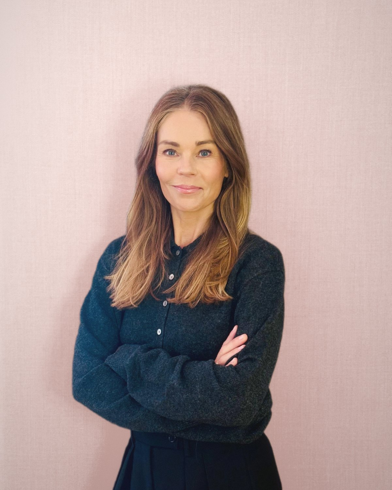

01
Creative vision needs strategic discipline
A powerful idea only becomes a powerful result when it’s translated into clear decisions, governance and focus.
Strategy · Insight · Leadership · Knowledge
Where creative vision meets commercial clarity - powered by 20+ years in fashion, lifestyle and beauty.

I’m a senior executive and independent advisor with 20+ years in fashion and textiles, and two years in e-commerce beauty. I work alongside boards and management teams to sharpen strategy and build the structures that make it real - driving profitable growth without compromising creative integrity.
My edge is strategic clarity grounded in operational reality. I know how decisions at the top translate into daily execution, and I design strategy accordingly. I connect functions, align teams, and turn complexity into clear direction - leading with empathy, communicating with impact, and building engagement that lasts beyond the project.
I combine commercial rigour with creative intuition and a strong sustainability perspective to drive growth and long-term brand value - using AI as a practical tool to speed up analysis, sharpen decisions and free up time for the creative work that matters.
Brands I’ve worked with
“
Strategy is only as strong as the structure that supports it - and the people who carry it forward.
- SILK Advisory
Engagements range from focused strategy sprints to interim leadership and
long-term advisory. Each is shaped to the brand, the moment, and the team.
The areas below are a selection of how I can help.
Category roles, assortment architecture and range planning that turn brand ambition into a focused, profitable offer.
Price ladders, tiering and private-label strategy that protect brand equity while lifting margin.
Aligning assortment, pricing and timing across retail, wholesale, e-commerce and partners - from a global perspective.
Clear structures, decision rights and governance that move teams from fragmented ways of working to ownership, speed and alignment.
Hands-on senior leadership for a defined period or a key transition - stepping in to stabilise, set direction and build the team to carry it forward.
Ready to contribute to the boards of fashion, lifestyle and beauty brands - bringing strong strategic thinking, grounded in real operational experience.
Tailored sessions for leadership teams and boards to align on direction, priorities and next steps - designed to end with decisions, not just discussions.
Talks and panels on commercial strategy in fashion, sustainable growth and leading creative organisations through change.
Great design is not enough - it needs structure, insight and a clear narrative to become meaningful, scalable and profitable.
01
A powerful idea only becomes a powerful result when it’s translated into clear decisions, governance and focus.
02
I help teams reduce complexity to what truly matters - enabling speed, clarity and better decision-making.
03
Long-term brand value comes from responsible choices. I see sustainability as a strategic lever - not just an operational one.
04
An early adopter of 3D and AI - tools that speed up work and free up space for deeper creative work.
05
Warm, open, high-trust collaboration is where the best work happens. I lead with openness, empathy and momentum.
06
Assortment, pricing and production are commercial choices. I connect creative ambition to customer needs, margin and sell-through.
For new engagements, board enquiries, speaking requests or a confidential conversation - please get in touch.